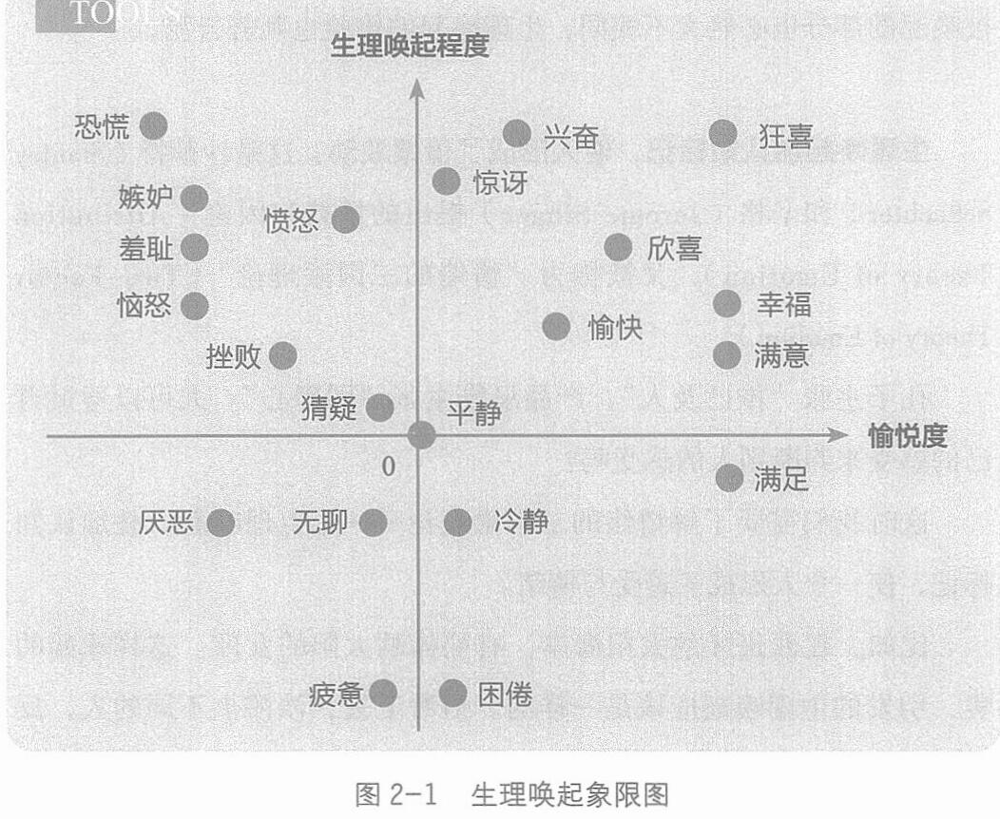

我们的很多基础情绪都能在这张图中找到自己的位置。比如：兴奋是愉悦度正向的高唤起，冷静是愉悦度正向的低唤起，愤怒是愉悦度负向的高唤起，厌恶是愉悦度负向的低唤起。
愉悦度负向且唤起程度比疲惫更低的状态，就指向了抑郁。生理唤起的感受是生命流动的感觉，而抑郁则是生命感低微的黑处。
我们所谓的心情不好，多半是指沉浸在那些愉悦度负向的生理唤起里。
当我们明白很多情绪其实来自认知标记，那么随着认知的不断提升与打开，我们会发现，一些曾经让我们愤怒、挫败、沮丧的事情，我们开始可以理解和消化，可以平静和冷静地处理。
所以管理情绪，其实可以从管理认知开始。
036